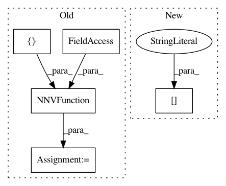

9caa24c58689c1d6f3d982f623ceab8f78e7362d,examples/mujoco_all_diayn_finetune.py,,run_experiment,#Any#,150
Before Change
var_scope="qf-finetune",
)
vf = NNVFunction(
env_spec=fixed_z_env.spec,
hidden_layer_sizes=[M, M],
var_scope="vf-finetune",
)
algorithm = SAC(
base_kwargs=base_kwargs,
env=fixed_z_env,
After Change
Q = create_feedforward_Q_function(
variant, aug_obs_space, env.action_space)
V = create_feedforward_V_function(
variant["V_params"], aug_obs_space)
algorithm = SAC(
base_kwargs=base_kwargs,
In pattern: SUPERPATTERN
Frequency: 3
Non-data size: 5
Instances
Project Name: rail-berkeley/softlearning
Commit Name: 9caa24c58689c1d6f3d982f623ceab8f78e7362d
Time: 2018-10-20
Author: hartikainen@berkeley.edu
File Name: examples/mujoco_all_diayn_finetune.py
Class Name:
Method Name: run_experiment
Project Name: rail-berkeley/softlearning
Commit Name: 9caa24c58689c1d6f3d982f623ceab8f78e7362d
Time: 2018-10-20
Author: hartikainen@berkeley.edu
File Name: examples/mujoco_all_diayn.py
Class Name:
Method Name: run_experiment
Project Name: rail-berkeley/softlearning
Commit Name: 9caa24c58689c1d6f3d982f623ceab8f78e7362d
Time: 2018-10-20
Author: hartikainen@berkeley.edu
File Name: examples/multigoal_sac.py
Class Name:
Method Name: run_experiment